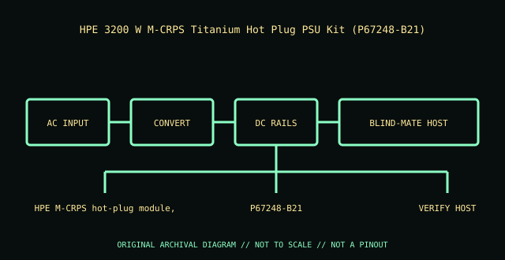

[ POWER CONVERSION // IDENTIFIED MODEL ]
HPE 3200 W M-CRPS Titanium Hot Plug PSU Kit (P67248-B21)
Exact module identity: HPE P67248-B21. This record applies only to this manufacturer option/PID; nominal wattage or a similar shell does not prove cross-model compatibility.

HIGH-VOLTAGE WARNING: Disconnect mains before external inspection. Never open a PSU. Internal capacitors may retain lethal charge after unplugging. Do not probe or repair its interior; use qualified service or replace the unit.
Model-specific ratings & fit
| Manufacturer identity / exact module | HPE P67248-B21 — HPE 3200 W M-CRPS Titanium Hot Plug PSU Kit (P67248-B21) |
|---|---|
| Rated output / rail information | 3200 W high-line class / 1600 W at 100–127 V low-line; +12 VDC main output (3200 W class; use nameplate/QuickSpecs for exact current limit); standby rail per module specification. |
| AC input | 100–127 V AC and 200–240 V AC, 50/60 Hz; 277 V AC or 380 V DC only on specifically qualified systems. |
| Efficiency | 80 PLUS Titanium; up to 96% (manufacturer rating) |
| Form factor / mounting | HPE M-CRPS hot-plug module, 73.5 mm class; not ATX. |
| Connectors / backplane | IEC C20 AC inlet; HPE M-CRPS blind-mate output into a supported power bay/backplane. |
| System compatibility | Only HPE Gen12/Alletra/XD230 systems that list P67248-B21 and support its input mode and wide M-CRPS bay. 277 V AC and 380 V DC are restricted to specifically qualified host configurations. |
| Redundancy / cooling | Hot-plug/redundancy is host-managed and conditional on remaining capacity. Do not remove a module unless host status and service procedure confirm a safe redundant state. |
| Revision distinctions | 3200 W class at qualified high-line inputs; 1600 W low-line ceiling. Input alternatives (277 V AC / 380 V DC) are not universal. Match exact part, host, feed and bay. |
Compatibility & safe installation
- Confirm full manufacturer part/PID, revision and label against the host’s exact system QuickSpecs, service manual and power-supply matrix.
- Check input voltage, rail limits, connector/backplane keying, bay dimensions, supported efficiency class and cooling direction before installation.
- Hot-plug is conditional: verify healthy remaining supply capacity, supported redundancy state and the host service procedure before removing a live module.
- Do not mix modules or use modular leads across models unless the system manufacturer explicitly approves that combination.
- Never open or probe a PSU. Retire damaged, wet, burnt, corroded, modified or unidentified units.
Revision & archival notes
3200 W class at qualified high-line inputs; 1600 W low-line ceiling. Input alternatives (277 V AC / 380 V DC) are not universal. Match exact part, host, feed and bay.
Archive a clear nameplate photograph, complete option/FRU number, hardware revision, AC inlet and connector labels, host model, and source-document revision. Distinguish manufacturer ratings from derived values.
Manufacturer references
- HPE 3200W M-CRPS Titanium Hot Plug Power Supply Kit data sheetExact option identity, input modes, low-line derating and efficiency.
- HPE 3200 W M-CRPS Titanium Hot-plug Power Supply | HPE ProLiant Compute documentationHost-qualified input modes and supported system requirements.
- HPE ProLiant Compute DL320 Gen12 User Guide — installing an AC power supplyExample host hot-plug procedure and safety; the 3200 W kit is not implied compatible with this example server.
Manufacturer nameplate and applicable system manual take precedence over this summary.